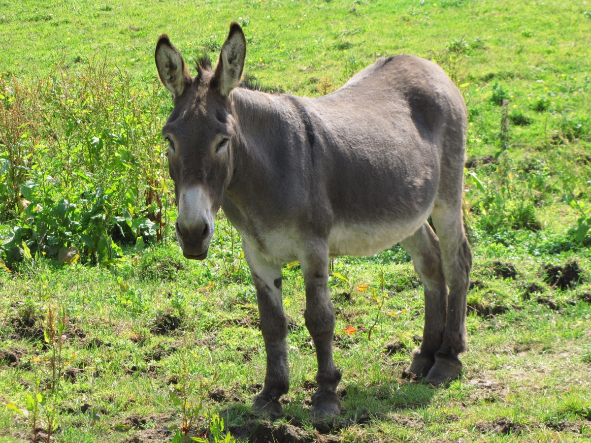
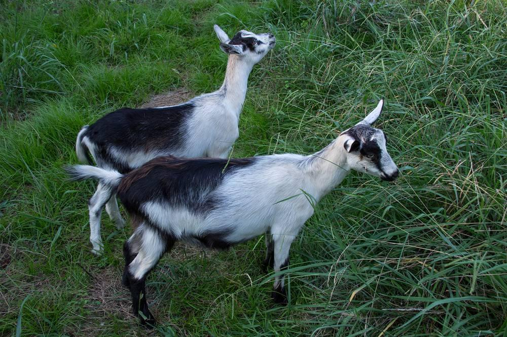
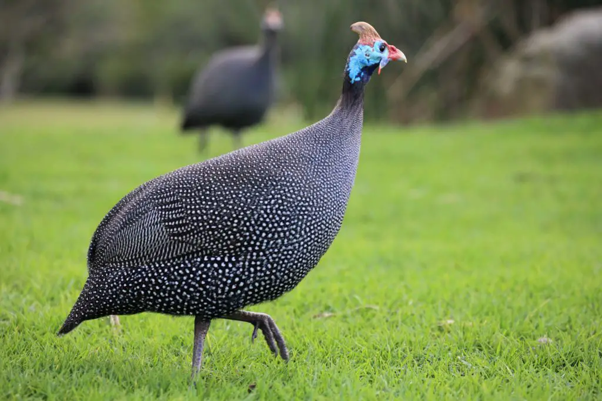
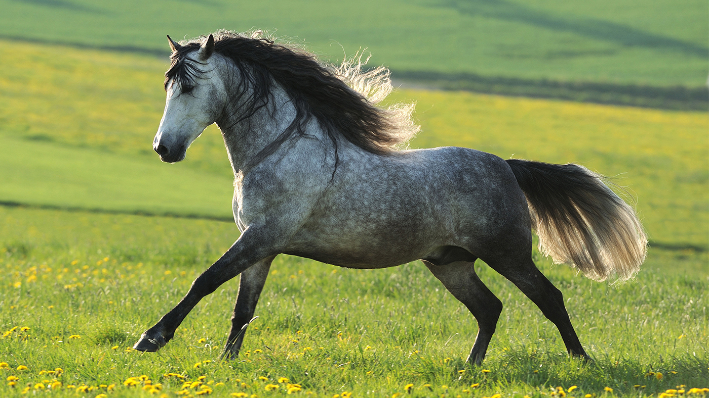
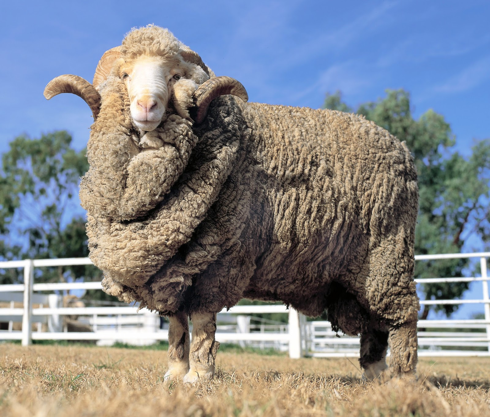
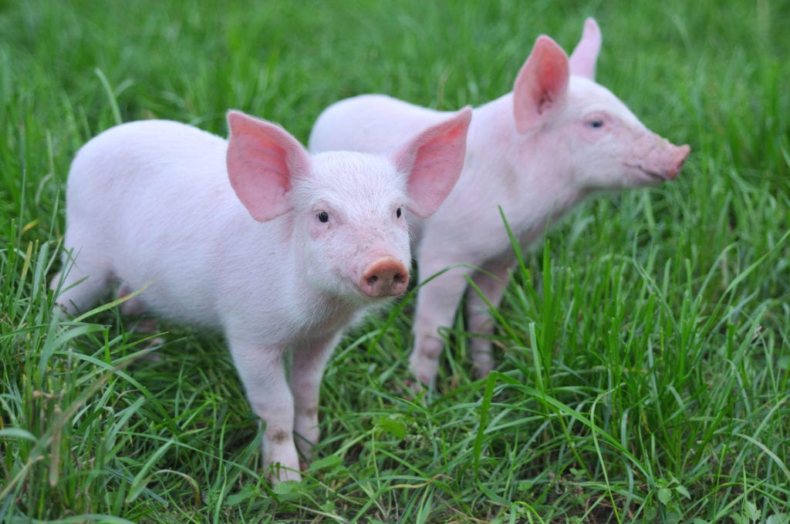
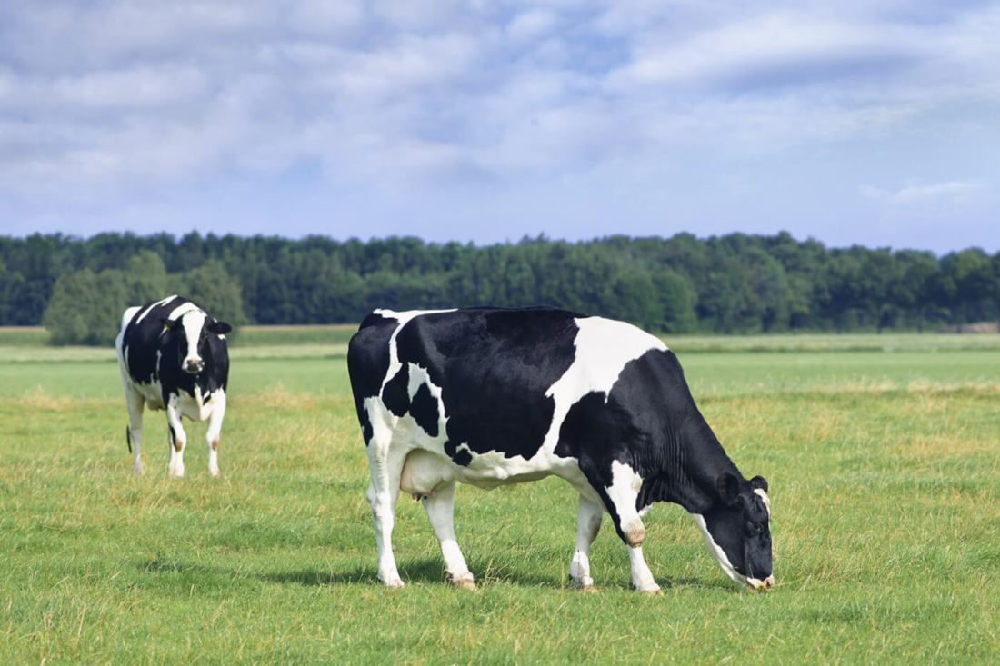
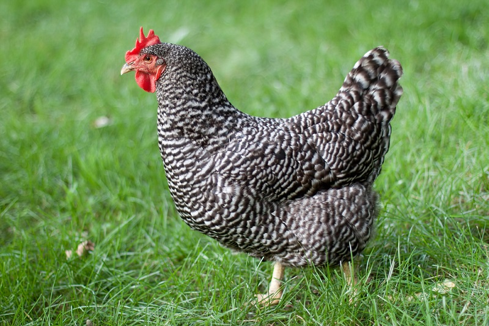
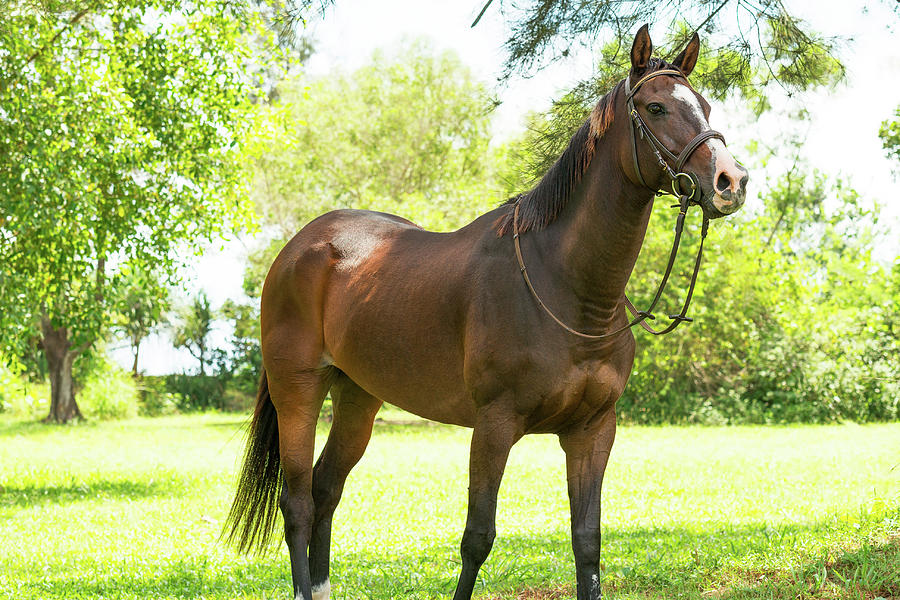

Burro Gris
Paciente, fuerte y muy noble. Es un compañero fiel en trabajos rurales y un símbolo de resistencia.

Cabra Alpina
Curiosa, ágil y muy inteligente. Produce leche de excelente calidad y es experta en trepar.

Pavo Real Blanco
Majestuoso, raro y espectacular. Su plumaje blanco puro lo convierte en una joya viviente.

Guineo (Gallina de Guinea)
El guineo es un ave doméstica muy popular en Venezuela por su resistencia y su capacidad para alertar sobre cualquier movimiento extraño.

Caballo Andaluz
Fuerte, noble y elegante. Este caballo es conocido por su porte majestuoso y su gran inteligencia para el trabajo y la doma.

Oveja Merina
Suave, tierna y muy apreciada por su lana. La oveja merina es símbolo de calma y de los paisajes rurales.

Cerdo Yorkshire
Inteligente, curioso y sociable. Este cerdito es muy adaptable y uno de los más comunes en las granjas modernas.

Vaca Holstein
Tranquila, dócil y productiva. Es una de las razas lecheras más importantes del mundo gracias a su gran capacidad de producción.

Pavo Real Azul
Majestuoso, colorido y elegante. Su enorme cola en forma de abanico lo convierte en uno de los animales más impresionantes del corral.

Gallina Plymouth Rock
Fuerte, resistente y excelente ponedora. Su plumaje a rayas blancas y negras la hace muy llamativa. Es tranquila y perfecta para granjas familiares.

Caballo Criollo
Fuerte, resistente y muy noble. Es un caballo versátil usado para trabajo, transporte y competencias. Su carácter dócil lo hace ideal para la vida en el campo.

Pato Criollo
Rústico, adaptable y muy sociable. Es común en patios y granjas por su resistencia y su capacidad para vivir cerca del agua.